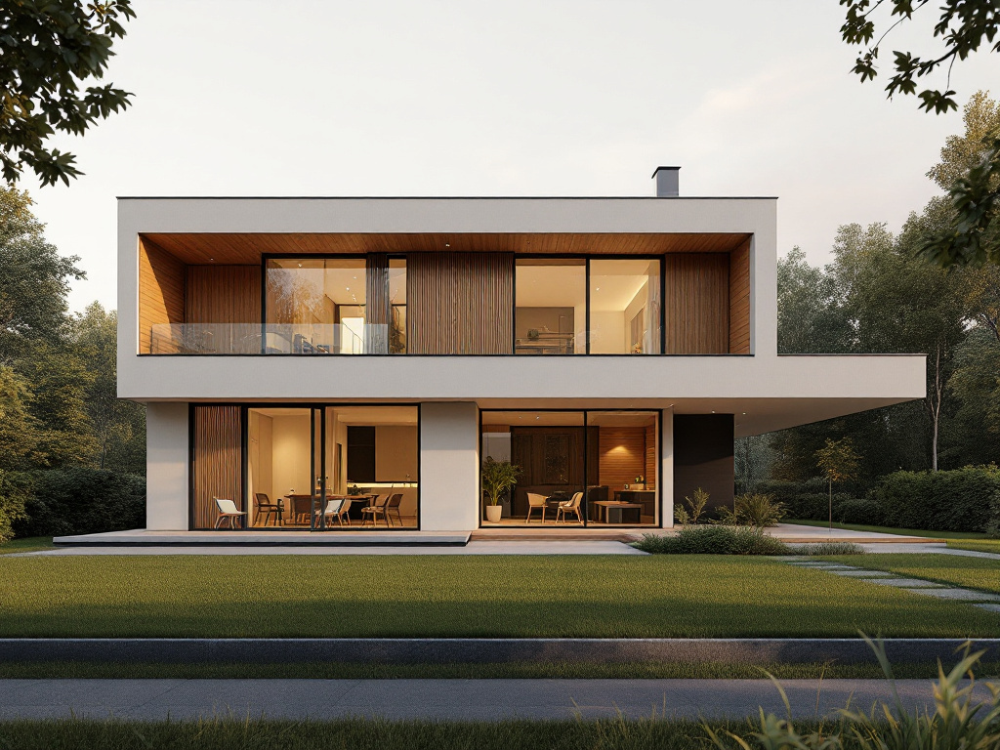
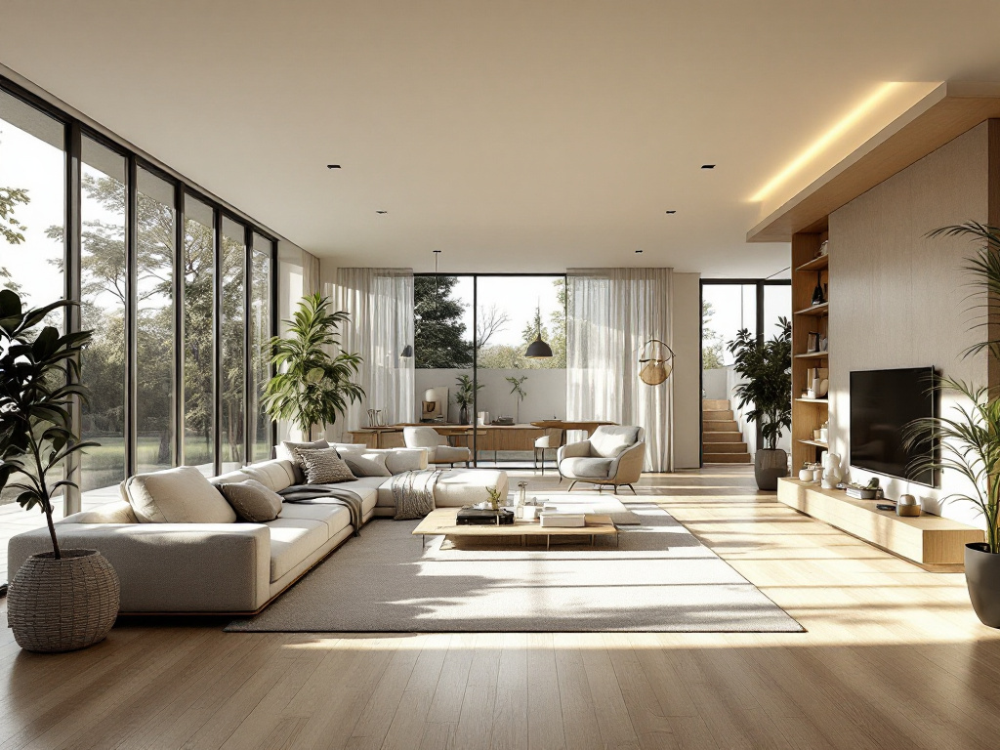
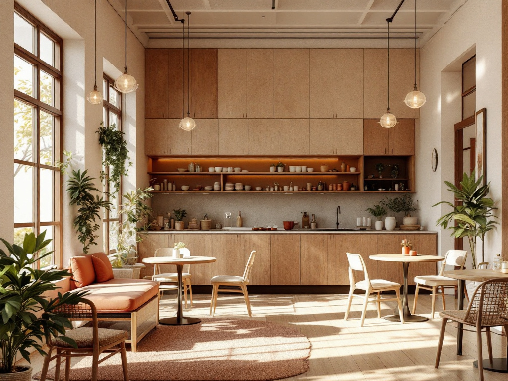

Projekty domów jednorodzinnych
Projekty indywidualne „od zera” oraz adaptacje gotowych projektów. Dopasowane do działki, budżetu i potrzeb rodziny.
Pracownia Architektoniczna 2D3D · Łódź
Ponad 20 lat doświadczenia i kilkadziesiąt zrealizowanych projektów. Od koncepcji, przez formalności, po nadzór autorski — prowadzę inwestycję od pierwszego szkicu do odbioru kluczy. Pracuję w Łodzi i okolicach oraz zdalnie na terenie całej Polski.
Umów bezpłatną konsultacjęJestem architektem z uprawnieniami budowlanymi, projektuję od ponad 20 lat. Przez ten czas zrealizowałem kilkadziesiąt domów, mieszkań i wnętrz. Łączę funkcjonalność z ponadczasową estetyką — moje projekty nie starzeją się razem z trendami. Zawsze słucham klienta: dom ma być dopasowany do Waszego życia, nie odwrotnie.
Projekty indywidualne „od zera” oraz adaptacje gotowych projektów. Dopasowane do działki, budżetu i potrzeb rodziny.
Koncepcja, rzuty meblowe, dobór materiałów i oświetlenia, wizualizacje oraz kompletny projekt wykonawczy dla wykonawców.
Pozwolenia na budowę i zgłoszenia, uzgodnienia, mapy i ekspertyzy — załatwiam formalności, abyś Ty mógł skupić się na budowie.
Stały nadzór autorski nad realizacją — pewność, że budowa powstaje zgodnie z projektem i sztuką budowlaną.
Prezentowane obrazy to wizualizacje koncepcyjne projektów.

Łódź i okolice. Projekt indywidualny dopasowany do działki i potrzeb rodziny.

Projekt wnętrza wraz z kompletem rysunków wykonawczych dla wykonawców.

Aranżacja lokalu usługowego — od koncepcji po nadzór nad realizacją.
Pierwsza konsultacja jest bezpłatna i niezobowiązująca — opowiedz mi o swoich planach, a ja podpowiem, jak je zrealizować.